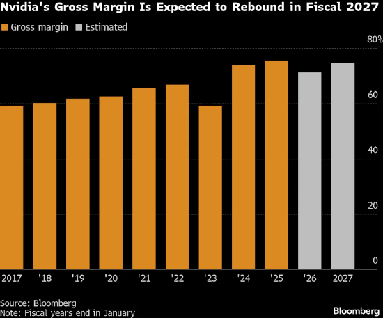

值得關注的是，在該股最後一次收於歷史高點當日，其股價較2022年底累計漲幅超過1300%，市值突破5萬億美元，而不到三年前該公司市值僅約4000億美元。如今，該公司股價在短短數月內蒸發4600億美元市值，三年累計漲幅回落至近1200%。
與此同時，這家佔據主導地位的人工智能芯片製造商正面臨前所未有的競爭壓力，競爭對手既包括AMD這類同行，也涵蓋Alphabet、亞馬遜公司等核心客户。華爾街對於英偉達向眾多客户進行投資的做法也愈發擔憂，此類投資或被視作人為提振需求的手段。
“相關風險已顯著上升。”資產管理規模達130億美元的Advisors Capital Management合夥人兼投資組合經理JoAnne Feeney表示，這一風險將影響到大多數股票投資者。相關數據顯示，自2022年10月市場牛市啓動以來，英偉達股價的上漲貢獻了標準普爾500指數約16%的漲幅，而緊隨其後的蘋果公司貢獻佔比僅為7%左右。
英偉達公司收益預期高漲。儘管市場對其股票的需求依舊強勁，但其估值相較許多科技巨頭同行仍處於較低水平。預計在截至2027年1月的下一財年，英偉達銷售額將增長53%，利潤增幅可達57%。相比之下，蘋果公司同期的銷售額和利潤增幅預計均在10%左右。
華爾街也並未打算放棄英偉達。在追蹤該公司的82位分析師中，有76位給予買入評級，僅有1位建議賣出。華爾街給出的平均目標價顯示，未來12個月英偉達股價有望上漲37%，屆時其市值將突破6萬億美元。
“英偉達仍有望成為公開市場中增長最快的公司之一。”菲尼説，“你會選擇持有這隻股票嗎？答案是肯定的。”
英偉達首席執行官黃仁勳週一在拉斯維加斯舉行的國際消費電子展上發表演講時表示，公司新一代名為Rubin的芯片將於今年推出，客户很快就能體驗這項技術。
“市場對英偉達GPU的需求正呈爆發式增長。”黃仁勳稱，“之所以會出現這種爆發式增長，是因為人工智能模型的規模正以每年十倍的量級持續擴張。”
以下是英偉達股票在2026年面臨的幾大關鍵問題。
芯片市場競爭加劇
英偉達是人工智能加速器領域的龍頭企業，佔據着超過90%的市場份額。但目前競爭對手正開始嶄露頭角。
彭博社數據顯示，AMD已贏得OpenAI、甲骨文公司等企業的大型數據中心訂單，預計其2026年數據中心業務收入將激增約60%，達到近260億美元。與此同時，佔英偉達營收超 40% 的Alphabet、亞馬遜、Meta、微軟等客户，正着手自研芯片，以期擺脱對英偉達芯片的依賴 —— 這類芯片單價可超過 3 萬美元。
“只要有性價比更高的替代芯片，企業就會選擇後者。”Jonestrading首席市場策略師Michael O‘Rourke表示，“顯然，英偉達想要維持90%的市場份額將面臨嚴峻挑戰。”
早在十多年前，Alphabet旗下的谷歌就已啓動首款TPU的研發工作，並對其進行優化，用於人工智能模型的訓練和推理。谷歌最新推出的Gemini人工智能聊天機器人收穫了廣泛好評，而該產品正是基於自研TPU運行的。2025年10月，Alphabet宣佈與人工智能公司Anthropic達成一筆價值數百億美元的芯片合作協議。同年11月，科技媒體The Information報道稱，Meta正洽談於2026年從谷歌雲租賃芯片，並計劃在2027年將其部署至自家數據中心。
市場對這類定製芯片的需求也帶動了博通公司的發展，該公司專為人工智能巨頭生產半導體產品。博通的專用集成電路業務實現快速增長，助力其躋身全球市值最高的企業之列。目前博通市值已達1.6萬億美元，超過特斯拉公司。
2025年12月24日，英偉達宣佈授權使用芯片初創公司Groq的技術並聘請其高管，這一舉措似乎也印證了市場對更專業、性價比更高的芯片需求正在攀升。英偉達計劃將格羅克芯片的相關技術融入未來產品設計中，藉此掌握低延遲半導體技術 —— 這是一種與專用集成電路類似、可用於運行人工智能軟件的技術方案。
不過，人工智能計算需求的規模極為龐大，即便科技巨頭紛紛部署自研芯片，仍在大量採購英偉達芯片。分析師Kunjan Sobhani和Oscar Hernandez Tejada因此指出，在可預見的未來，英偉達的市場份額有望保持穩定。
“市場低估了英偉達的行業地位。”給予英偉達買入評級的摩根士丹利分析師Joseph Moore等人在2025年10月5日發布的一份研究報告中寫道，“在雲服務領域，英偉達仍是唯一的專業解決方案提供商。”
預計2026年亞馬遜、微軟、Alphabet和Meta的資本支出總額將超過4000億美元，其中大部分資金將用於數據中心設備採購。此外，未來幾年這些企業還將斥資數千億美元租賃其他公司開發的數據中心空間。開放人工智能研究中心已承諾在未來數年投入1.4萬億美元，儘管外界對這家持續虧損的初創公司能否兑現這一投入存有疑慮。
利潤率與估值承壓
隨着競爭對手推出更多性價比更高的替代產品，投資者正密切關注英偉達的利潤率表現，因為該公司定價策略的任何鬆動都將直接反映在利潤率數據上。
作為衡量盈利能力的關鍵指標，英偉達的毛利率（不計銷貨成本）在2024和2025財年維持在75%左右的水平。但在2026財年，由於大力推進Blackwell系列芯片量產導致成本上升，公司毛利率出現下滑。英偉達預計，在截至2026年1月31日的2026財年，毛利率將降至71.2%，並計劃在2027財年回升至75%左右。由此可見，一旦毛利率未能達到預期，華爾街或將拉響警報。

另一個讓投資者繼續看好英偉達的因素，是其相對低廉的估值。以未來12個月預期市盈率25倍計算，英偉達的估值低於 “華麗七巨頭” 中的所有其他個股，僅高於Meta。其估值水平也低於標準普爾500指數中超過四分之一的成分股，包括税務軟件TurboTax製造商Intuit。
美國銀行半導體行業分析師Vivek Arya表示：“當前市場對英偉達的估值邏輯，彷彿是行業週期已經終結、人工智能技術無人再部署、前路遍佈重重阻礙一般。這恰恰是投資者眼中的機遇所在，而且顯然與互聯網泡沫鼎盛時期的市場格局截然不同。”